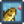
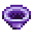

Outils
Les outils vous aident à faire des choses dans le monde. Vous pouvez les transporter avec vous dans votre sac à dos pour pouvoir les utiliser ou les stocker dans un coffre lorsque vous n'en avez pas immédiatement besoin.
Amélioration
Vous pouvez améliorer vos outils chez le forgeron en échange d'or et de barres de métal. Les améliorations prennent deux jours. Pendant l'amélioration, vous ne pouvez rien acheter à Clint, ni lui demander de casser des géodes. Les outils doivent être améliorés dans l'ordre croissant des matériaux : par exemple, un outil en cuivre ne peut pas être mis à niveau directement en iridium.
Conseil :
- une amélioration prenant deux jours à compléter, vous vous réveillerez donc deux jours de suite sans votre outil. Vous pouvez utiliser l'outil pendant la journée, puis l'apporter au forgeron (avant sa fermeture) pour l'améliorer. Le lendemain, vous serez sans votre outil. Le jour suivant, vous pouvez vous rendre chez le forgeron pour prendre l'outil et l'utiliser pour le reste de la journée.
- Lorsqu’un outil son amélioration, un message s’affiche dans le coin inférieur gauche de l’écran lorsque vous vous réveillez pour la journée.
Enchantements
- Article principal : Enchantements
Pour le prix d'un  Tesson prismatique et 20
Tesson prismatique et 20  Éclat de braise, le joueur peut ajouter un enchantement aléatoire sur tous les outils et armes, à l'exception de la Faux, Faux d'or, Faux d'iridium, et des Poubelles.
Éclat de braise, le joueur peut ajouter un enchantement aléatoire sur tous les outils et armes, à l'exception de la Faux, Faux d'or, Faux d'iridium, et des Poubelles.
Chaque outil ne peut avoir qu'un enchantement et un enchantement inné en même temps, et il n'est pas possible de choisir lesquels seront appliqués. Il est cependant possible de remplacer un enchantement par un autre, pour le même prix. Sur un outil, le jeu ne réappliquera pas les deux derniers enchantements, pour varier celui qui sera obtenu.
L'amélioration d'un outil garde son enchantement.
Le jeu génère un enchantement aléatoire, mais le calcul est influencé par le nombre de fois que le joueur a enchanté un (ou plusieurs) outil(s). Relancer la partie et enchanter un outil différent modifiera donc la progression des futurs enchantements.
| Nom | Hache | Canne à pêche |
Houe | Pioche | Arrosoir | Tamis | Effet |
|---|---|---|---|---|---|---|---|
| Hameçon automatique | Hameçonne automatiquement les poissons lorsqu'ils mordent (démarrant le mini-jeu de pêche) | ||||||
| Archéologue | Houe : Chance doublée de trouver des artéfacts en creusant des lieux d'artefacts. Tamis : 4x plus de chance de trouver des Trésors d'artefacts, 2x plus de chance de trouver des Fragments d'os, 3.5x plus de chance de trouver des artefacts. | ||||||
| Sans fond | Eau infinie. | ||||||
| Compétent | Ne consomme pas d'endurance. | ||||||
| Généreux | Houe : 50% de chance d'obtenir le double d'objets en creusant. Tamis : Augmente le nombre d'objets trouvés (hors minerai), voir Tamis pour plus de détails. | ||||||
| Pêcheur | 10% de chance d'obtenir un poisson spécifique au point d'eau en tamisant. | ||||||
| Maître | Ajoute un niveau supplémentaire de Pêche au joueur (lorsque tenue dans la main). | ||||||
| Puissant | Ajoute un niveau supplémentaire pour les pioches, 2 pour les haches. | ||||||
| Conservation | 50% de chance de ne pas user les Appâts et le Matériel de pêche. | ||||||
| Portée | Augmente la charge maximale afin d'agir sur une zone plus grande. Augmente la zone d'effet maximale jusqu'à 5x5 cases. | ||||||
| Rasoir | 3 unités de bois supplémentaires sur les chênes, érables, pins et palmiers. Bois dur sur les acajours. Champignon rouge sur les Arbres champignon. Crosse de fougère sur les Arbres de la pluie verte (type 3). Chance d'obtenir du bois dur supplémentaire sur les souches. Chance d'augmenter le rendement des récoltes géantes. | ||||||
| Rapide | L'outil est 33% plus rapide à l'usage. |
Efficience
L'efficience fait référence à la quantité d'énergie nécessaire pour utiliser un outil spécifique.
Au niveau 0 de compétence, chaque coup de pioche, de hache et de houe utilise 2 points d'énergie. Chaque utilisation de la canne à pêche utilise 8 points d'énergie. L'arrosoir de départ utilise quant à lui 2 points d'énergie.
Chaque augmentation dans les compétences diminue le besoin en énergie pour les outils de 0,1 point (le jeu garde la trace des quantités fractionnaires d'énergie, mais dans l'interface utilisateur elles sont arrondies à l'entier le plus proche). Les augmentations de compétence au-delà du niveau 10 (uniquement possible temporairement via les buffs) continuent de diminuer les besoins en énergie.
Le fait de charger complètement un arrosoir amélioré en maintenant le clic ou la touche de raccourci correspondante appuyé augmente son coût en énergie de 2 points par amélioration. Cependant, chaque augmentation de compétence fait diminuer ces besoins en énergie de 0,1 par amélioration. Au niveau 0 d'agriculture, l'arrosoir de base consomme 2 points d'énergie là où l'arrosoir d'iridium en consomme 10. Au niveau 10 d'agriculture, l'arrosoir de base consomme 1 point d'énergie là où l'arrosoir d'iridium en consomme 9 (10 moins 0.1 par niveau de compétence). L'utilisation d'un arrosoir amélioré pour arroser une case coûte la même énergie que l'arrosoir de départ. Tenter d'utiliser un arrosoir vide ne coûtera jamais d'énergie, tout comme le fait de remplir son arrosoir.
Améliorer une hache, une pioche ou une houe ne diminue pas la quantité d'énergie nécessaire à l'utilisation de ces outils. L'efficacité accrue de la hache, de la pioche ou de la houe cependant, fera en sorte qu'un plus petit montant d'énergie globale soit utilisée sur la même tâche qu'un outil de niveau inférieur (on passera par exemple de 15 coups de hache dans un arbre avec la hache de base, à 6 coups pour la hache d'or).
Il faut noter que toutes les houes utilisent la même quantité d'énergie (2 points au niveau 0 d'agriculture et 1 point pour le niveau 10) qu'elles soient complètement chargée pour labourer une plus grande zone ou pour ne faire qu'une case.
Toutes les cannes à pêche utilisent la même quantité d'énergie : 8 points au niveau 0 de pêche et 7 points au niveau 10.
Outils concernésAgriculture Cueillette Pêche Extraction minière |
Outils non concernésLes outils ci-dessous ne consomment pas d'énergie: Les outils ci-dessous consomment 4 points d'énergie: |
Ni le changement d'appât dans les casiers à crabes, ni leur récolte ne consomment d'énergie, quel que soit le niveau de la compétence.
Houes
- Article principal : Houes
Utilisées principalement pour labourer le sol pour l'agriculture et pour déterrer des artefacts dans des lieux d'artefact. Les houes améliorées peuvent être utilisées pour traiter plus d'une case à la fois en maintenant le clic gauche enfoncé.
| Image | Nom | Coût | Ingrédients | Améliorations |
|---|---|---|---|---|
| Houe | Outil de départ | |||
| Houe en cuivre |
|
Augmente la zone d'effet maximale à 3 parcelles en ligne droite. | ||
| Houe en acier |
|
Augmente la zone d'effet maximale à 5 parcelles en ligne droite. | ||
| Houe en or |
|
Augmente la zone d'effet maximale à une zone 3x3 (9 tuiles adjacentes). | ||
| Houe en iridium | Augmente la zone d'effet maximale à une zone 6x3 (18 tuiles adjacentes). |
Pioches
- Article principal : Pioches
Utilisées principalement pour briser des pierres et ramasser du matériel placé ou des meubles. Elles sont également utilisées pour déferrer le sol qui a été labouré avec une houe.
L'utilisation d'une pioche sur un monstre infligera une petite partie des dégâts, de façon similaire aux armes.
| Image | Nom | Coût | Ingrédients | Améliorations |
|---|---|---|---|---|
| Pioche | Outil de départ | N/A | Peut casser des petites pierres n'importe où. Dans les Mines, peut casser des roches plus dures aux niveaux 1 à 39 en deux coups et peut casser de gros blocs rocheux avec plusieurs coups. Peut casser les nœuds de cuivre en 3 coups. | |
| Pioche en cuivre | Peut casser tous les rochers des niveaux 1 à 39 des Mines en un seul coup et 40 à 79 en deux coups. Peut casser les nœuds de cuivre en 2 coups. | |||
| Pioche en acier | Peut casser les blocs rocheux sur la ferme.
Peut casser des rochers aux niveaux 40-79 dans les Mines en un seul coup. | |||
| Pioche en or | Peut casser une météorite. Peut casser des rochers aux niveaux 80-120 dans les Mines en un seul coup. Casse les nœuds de cuivre et de fer en 1 coup, les nœuds d'or en 2 coups et les nœuds d'iridium en 4 coups. | |||
| Pioche en iridium | Peut casser les rochers dans la Caverne du Crâne et la Mine de la carrière en un seul coup. Peut casser les blocs rocheux de la Mine de la carrière en 3 coups. Casse les nœuds de diamant en 2 coups et les autres nœuds de gemme en 1 coup. |
Haches
- Article principal : Haches
Utilisées pour abattre des arbres afin de récupérer du bois et de la sève et pour récupérer du bois dur à partir d'une grande bûche ou d'une grande souche. Les haches peuvent également être utilisées pour récolter des cultures géantes. Comme les pioches, elles peuvent infliger une petite quantité de dégâts aux monstres.
| Image | Nom | Coût | Ingrédients | Améliorations |
|---|---|---|---|---|
| Hache | Outil de départ | 10 coups pour couper un arbre entièrement développé et 5 coups pour un petit tronc. | ||
| Hache en cuivre |
|
Peut hacher des grandes souches. 8 coups pour couper un arbre entièrement développé et 4 coups pour un petit tronc. | ||
| Hache en acier |
|
Peut couper des grandes bûches. 6 coups pour couper un arbre complètement développé et 3 coups pour un petit tronc. | ||
| Hache en or |
|
4 coups pour couper un arbre entièrement développé et 2 coups pour un petit tronc. 2 coups pour un arbre de stade 4, et un coup pour un arbre de stade 3 et inférieur. | ||
| Hache en iridium | 2 coups pour couper un arbre complètement développé et 1 coup pour une petite souche. 1 coup pour un arbre de stade 4 et inférieur. |
Arrosoirs
- Article principal : Arrosoirs
Utilisés pour arroser les cultures. Une plante ne pousse pas un jour où elle n’est pas arrosée. S'il pleut, la pluie arrose toutes les cultures sans utiliser l'arrosoir.
Les arrosoirs améliorés peuvent être utilisés pour arroser plus d'un carré à la fois en maintenant le clic gauche enfoncé.
| Image | Nom | Coût | Ingrédients | Amélioration |
|---|---|---|---|---|
| Arrosoir | Outil de départ | Possède une capacité totale en eau de 40 avant de devoir le remplir à nouveau. | ||
| Arrosoir en cuivre | Capacité augmentée à 55.
Augmente la zone d'effet maximale à 3 parcelles en ligne droite. | |||
| Arrosoir en acier | Capacité augmentée à 70.
Augmente la zone d'effet maximale à 5 parcelles en ligne droite. | |||
| Arrosoir en or | Capacité augmentée à 85.
Augmente la zone d’effet maximale à une zone 3x3 (9 parcelles adjacentes). | |||
| Arrosoir en iridium | Capacité augmentée à 100.
Augmente la zone d'effet maximale à une zone 6x3 (18 parcelles adjacentes). |
Poubelles
- Article principal : Poubelles
Utilisées pour supprimer des objets de son Inventaire.
Les poubelles améliorées rendront de l'or pour les objets détruits.
| Image | Nom | Coût | Ingrédients | Améliorations |
|---|---|---|---|---|
| Poubelle | Outil de départ | Utilisée pour supprimer des objets de l'inventaire. | ||
| Poubelle en cuivre | Lors de la suppression de l'objet, récupère 15% de sa valeur monétaire | |||
| Poubelle en acier | Lors de la suppression de l'objet, récupère 30% de sa valeur monétaire | |||
| Poubelle en or | Lors de la suppression de l'objet, récupère 45% de sa valeur monétaire | |||
| Poubelle en iridium | Lors de la suppression de l'objet, récupère 60% de sa valeur monétaire |
Cannes à pêche
Utilisées pour attraper du poisson. Maintenez enfoncé le clic gauche pour charger le lancé, utilisez ZQSD ou les touches fléchées pour ajuster légèrement le placement du crochet.
| Image | Nom | Coût | Améliorations | Localisation | Conditions nécessaires |
|---|---|---|---|---|---|
| Canne à pêche d'apprenti | Plus simple à utiliser (Ne pêche que du Poisson commun). | Achetée à la Poissonnerie | |||
| Canne à pêche en bambou | Offerte par Willy Achetée à la Poissonnerie |
||||
| Canne à pêche en fibre de verre | Peut utiliser des Appâts | Achetée à la Poissonnerie |  Niveau 2 de pêche (Vous recevez une lettre le lendemain de sa disponibilité) | ||
| Canne à pêche en iridium | Peut utiliser des Appâts & 1 Matériel de pêche. | Achetée à la Poissonnerie | Niveau 6 de pêche (Vous recevez une lettre le lendemain de sa disponibilité) | ||
| Canne à pêche supérieure d'iridium | N/A | Peut utiliser des Appâts & 2 Matériels de pêche. | Grotte de maîtrise | Acquérir la Maîtrise de la pêche. |
Tamis
- Article principal : Tamis
Utilisés pour récolter des minerais (et d'autres objets) depuis les lumières chatoyantes qui apparaissent aléatoirement sur les points d'eau.
| Image | Nom | Coût | Ingrédients | Améliorations |
|---|---|---|---|---|
| Tamis en cuivre | N/A | Permet de trouver 3 à 9 minerais, et jusqu'à 1 objet spécial. | ||
| Tamis d'acier | Permet de trouver 4 à 10 minerais, et jusqu'à 2 objets spéciaux. Légère chance de faire apparaître immédiatement un autre endroit pour la recherche d'or. | |||
| Tamis d'or | Permet de trouver 5 à 11 minerais, et jusqu'à 3 objets spéciaux. Plus grande chance de faire apparaître immédiatement un autre endroit pour la recherche d'or. | |||
|  | Tamis d'iridium | Permet de trouver 6 à 12 minerais, et jusqu'à 4 objets spéciaux. Grande chance de faire apparaître immédiatement un autre endroit pour la recherche d'or. |
Autres Outils
| Image | Nom | Coût | Description | Où le trouver |
|---|---|---|---|---|
| none | Sac de base (12 slots) | Outil de départ | Utilisé pour transporter votre inventaire. | Vous commencez avec celui là. Il peut contenir 12 emplacements pour items et peut être amélioré. |
| Grand sac (24 emplacements) | Débloque la seconde rangé de l'inventaire (12 emplacements de plus). | Acheté au magasin général de Pierre au début du jeu. | ||
| Sac de luxe (36 emplacements) | Débloque la troisième rangé de l'inventaire (12 emplacements de plus) | Acheté au magasin général de Pierre après l'achat du sac de 24 emplacements. | ||
| Faux | Outil de départ | Ça peut couper l’herbe pour faire du foin, si vous avez construit un silo. | Vous commencez avec. | |
| Faux d'or | N/A | C'est plus puissant qu'une faux ordinaire. | Trouvée à la fin de la Mine de la carrière. | |
| Faux d'iridium | N/A | Elle peut être utilisée pour ramasser n'importe quelle récolte. Elle est également excellente pour récolter du foin. | Acquérir la | |
| Seau de lait | Trais le lait de tes animaux. | Acheté à la ranch de Marnie. | ||
| Cisailles | Utilisée pour collecter la laine des moutons. | Achetées au Ranch de Marnie. | ||
| Radiateur | Garde vos animaux au chaud et heureux en hiver. | Acheté au Ranch de Marnie. Obtenu en récompense pour avoir complété | ||
| Récolteur automatique | Récolte automatiquement la production de vos animaux chaque matin. Fonctionne sur les vaches, les moutons et les chèvres. | Débloqué après avoir atteint le niveau 10 en agriculture. Le joueur recevra une lettre par courrier de Marnie. | ||
| Auto-caresse | Caresse automatiquement vos animaux chaque matin. Dois être placé à l’intérieur d’un poulailler ou d’une grange. | Acheté au Marché Joja. Récompense rare de la Caverne du Crâne. |
Destruction d'outils
La plupart des outils ne peuvent pas être jetés à la poubelle depuis l'inventaire du joueur ou glissés depuis l'inventaire pour les déposer. Les outils pouvant être jetés et/ou glissés sont : toutes les cannes à pêche, le récolteur automatique, le radiateur et les tamis.
Si le joueur perd sa faux, sa hache, sa pioche ou son arrosoir (en mourant dans les mines par exemple), l’outil de départ réapparaît le jour suivant à coté du lit du joueur ou dans le réfrigérateur (si le joueur a une cuisine), ou dans la boîte des objets trouvés dans le Manoir du maire. Le maire Lewis prévient par courrier qu'il les a trouvés.
Bugs
- En Multijoueur, il est possible de perdre un outil dans les mines sans jamais en avoir un de rechange. Une solution à ce problème est qu'un des joueurs non hôte crée un nouveau personnage, laisse son outil neuf dans un coffre, et revienne ensuite avec son personnage habituel.
- Lorsque vous utilisez une pioche, hache ou une houe sur un des cactus dans le Désert, l'outil disparaît de l'animation.
- Si le joueur essaye de jeter sa ligne de canne à pêche hors d'un point d'eau, le joueur peut être figé sur place. Les menus sont alors inutilisables et il est impossible de sauvegarder, il faut quitter le jeu de force.
Historique
- 1.4 : Les outils mis à niveau chez Clint vous indiqueront désormais quand ils seront prêts.
- 1.5 : Ajout des enchantements.
- 1.6 : Nouveaux types de tamis, comme amélioration du tamis en cuivre.
- 1.6.3 : La boutique de Clint et le service d'ouverture de géodes resteront disponibles pendant qu'un outil est en train d'être amélioré.